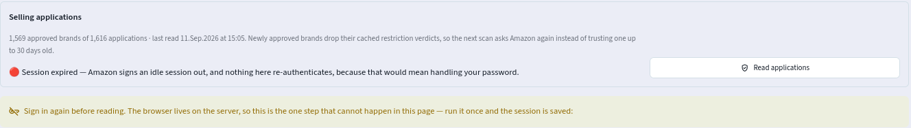

Most of what a young Amazon account could sell, it is not allowed to sell. This report follows how Biryar stopped treating that as a wall and started treating it as a map, one that shows which doors exist, which of them can be opened, and which are worth the price of the key.
Why can a seller not simply sell what it buys?
The sourcing agent described in the first report of this series reads the catalogues of seven German shops and asks, for every product with a barcode, whether this account could resell it on Amazon at a profit. Of the 632,844 products it found on Amazon, two thirds failed at a single question, namely whether the account is allowed to list them at all. Not because they were unprofitable, or slow, or mismatched. Because Amazon said no.
Amazon calls this gating, and it is a deliberate policy. A marketplace that lets anyone list anything inherits every counterfeit, every grey import and every unsafe product its sellers bring with them. Platforms therefore act as regulators of their own markets, setting rules about who may sell what, which is the role Boudreau and Hagiu describe for multi-sided platforms in general [1]. For a seller, the practical form of the rule is simple to state. Many brands, and some whole categories such as books or food, can be listed only after an application, and the application is usually decided on an invoice. That invoice must come from the manufacturer or an authorised distributor, be recent, cover a handful of units, and name the selling business. A receipt from a shop is not accepted.
Economists would recognise this as screening by a costly signal. Spence [2] showed that a signal separates good types from bad ones only when it is cheaper to send for the good type. A till receipt costs a counterfeiter nothing. A trade account with a distributor costs time, paperwork, a minimum order and a credible business, which a legitimate reseller can produce and a fraudulent one usually cannot. The invoice works as a filter precisely because it is expensive, and that expense is what this report is about.
Seen from the seller's side, an approved brand stays open. One invoice, if accepted, unlocks every product of that brand for as long as the approval lasts. Opening a gate is therefore less like buying stock and more like buying an option, an up-front cost that creates the right to profit from a stream of future deals, which is how Dixit and Pindyck frame irreversible investment under uncertainty [3]. The question is never whether to open gates in general. It is which gate pays for its key first.
What exactly stands between a product and a listing?
When Amazon refuses a listing it returns a short explanation, in German for this marketplace, and often more than one. The agent reads every message and turns each into a named lock. A message about a brand becomes a brand lock, labelled with the product's brand because Amazon's message never names it. A message about a category becomes a category lock, labelled with the category the message names. Anything the parser does not recognise becomes an "other" lock with its text attached, so that a new kind of restriction shows up in the reports as a strange name instead of quietly vanishing and making a locked product look open.
Recording every lock matters because locks combine. A product can be sold only when all of its locks are open, and some products carry two. Books are the clearest case, as Figure 1 shows.
Brand locks follow a long-tailed distribution, which shapes every strategy that follows. Among the gated retail products whose shop page names a brand, the hundred most common brands account for 56 percent of the products, while 3,489 of the 4,837 brands appear on five products or fewer. A few doors hold a lot behind them, and thousands hold almost nothing. The same pattern appears in online retail demand more generally, where a large share of sales comes from a very long tail of rarely sold items [4].
A brand lock is worth studying only if someone can issue the invoice that opens it, and the agent learned early that this is often not the case. Ranked by the number of locked products, the first brands on the list were batteries, screen protectors and phone cases. Every one of them turned out to be a house brand, a label created by a single trading company that sells its own products directly on Amazon and on the big electronics marketplaces. There is no distributor to buy from, because the brand owner is the only seller.
The agent detects this from evidence it already has. Electronics marketplaces name the seller of each listing, and if essentially every listing of a brand comes from one seller, that seller owns the brand and no wholesale channel exists. On the watchlist of mid-August this applied to 44 percent of all locked products, including the four largest brands. The test is deliberately one-sided. A brand with many sellers is marked as possibly distributed, which means only that there is no evidence against it.
A second kind of door has a key that does not fit. Here a distributor exists, but its invoice cannot serve as evidence. The gated book pile looked like the most profitable target of all, and every German publisher is supplied by the same few book wholesalers. On inspection the channel was closed for a business of this size. One wholesaler required a six-figure annual purchase volume, one issues invoices that list delivery notes rather than items, which an application cannot use, and one no longer accepted new contact by email. The agent now records such closed channels as data, with the evidence that closed them, and marks every brand behind a closed channel as unreachable, however much profit it seems to hold.
| Question about a brand lock | How the agent answers it | What a "no" means |
|---|---|---|
| Which locks sit on this product? | Parses every restriction message | Nothing, every product has an answer |
| Does anyone distribute the brand? | Counts distinct sellers on marketplaces that name them | A house brand, no invoice can exist |
| Will that channel issue a usable invoice? | Recorded closed channels with evidence | A distributor exists but the door stays shut |
| Is the account perhaps already approved? | The approvals list, Chapter III | The lock is real today |
| Is it worth opening? | The gate ranking, Chapter V | Open, but not this month |
What if the account may already sell more than anyone thought?
Amazon's interface for checking restrictions answers one product at a time and, for a young account, mostly answers no. Two early screens of supplier catalogues measured the cost of that. One spent 194 rate-limited calls to find 11 sellable products, the other spent 146 to find one. Roughly 330 calls bought twelve useful answers, and those calls come from the same budget that prices products and checks fees, which is where the actual decisions are made.
Seller Central has a page that answers the mirror question for the whole account at once, the list of approvals the account already holds. Many of them are granted automatically, without an application, when Amazon decides an account qualifies. When the agent first read that list it held 1,569 approved brands, many of them granted without the owner ever applying.
Inverting the search in this way does not replace Amazon's per-product check, which remains the truth before any purchase, since approvals are held per brand and per category and a product can be restricted for reasons that have nothing to do with either. What it replaces is the prospecting pass, in which almost every call is wasted. Intersecting the approvals list with a supplier's catalogue answers, offline and for nothing, which part of that catalogue is worth a call.
The intersection produces a third answer that is more useful than the first two. When a brand is on the approvals list but a product of that brand is still recorded as refused, one of two things is true. Either the approval is newer than the refusal, or something other than the brand is locking the product. Both are worth exactly one call to settle, and no call is better spent, because these are products Amazon has already been asked to price.
None of this works unless a name on the approvals list can be matched to the same name in a catalogue, and the two are rarely written the same way. Amazon writes a brand in capitals, an invoice in title case, a toy wholesaler uses the company's full name where a shop uses a short one, and a German category appears with an umlaut in one export and without it in the next. The agent keeps two keys per name. The first removes everything that is not a letter or a digit and folds umlauts the German way, so that two spellings of the same brand with and without a hyphen become identical, and "Bücher" becomes "buecher" rather than colliding with a different word. The second keeps the list of words, so that an approval for a two-word company name can plausibly cover a catalogue's one-word short form. Word lists rather than character prefixes keep two unrelated brands that happen to share a first word apart. A prefix match is always reported as weaker than an exact one, and only exact matches are allowed to change anything. This is the record-linkage problem of the first report again [5], with a different cost structure. A false "already open" sends the owner to buy stock he cannot list.
A refusal is a fact about one moment, and approvals arrive later on their own clock. The screening pipeline revisits a refused product only after thirty days, so a new approval stayed invisible for up to a month. The agent now closes that gap. Whenever the approvals list is imported, every refused product whose brand is now certainly approved, and whose refusal predates the approval, is put back in front of the screening queue. Nothing is marked sellable by this step. Amazon is simply asked again, and answers. The most recent import sent 2,281 retail products across 302 brands back to be asked.
Reading the approvals page cannot be done through Amazon's seller interface, which has no such endpoint, so the agent reads it with a real browser on the server, signed in by the owner by hand, at human pace, clicking nothing but the page numbers. It never stores or types a password. To find out whether a signed-in session could be kept alive by touching it every few hours, it recorded every check. Three sign-ins in September each died within an hour, and 258 later checks found the session gone. The measurement settled the question. The list is now refreshed when the owner signs in, from a button in Biryar, and a dead session is reported as a sign-in to do rather than as a failure to investigate.

Start with what a distributor sells, and ask which doors it could open.
The retail agent starts at a shop and walks towards Amazon. The reverse strategy starts at a distributor, because a distributor's invoice is the key and its catalogue is therefore a list of keys. Biryar buys from a European wholesale marketplace that aggregates several hundred suppliers, each with its own prices, stock and minimum order value. One of its catalogues, a list of electronics published by the marketplace and refreshed every morning, is now pulled automatically twice a week. It currently holds 412,604 offers of 156,403 distinct barcodes from 807 suppliers.
Wholesale catalogues name products, not brands, and the brand is the unit of every later decision because Amazon locks and unlocks per brand. Taking the first word of each product name was tried first and produced brands called "10-Port" and "1.92TB". The agent now matches names against a vocabulary of brands it has already seen on Amazon and in earlier catalogues, longest match first and anchored at the start of the name. Anchoring has one predictable failure. A screen protector "for" a phone maker's model starts with the phone maker's name and is assigned to that brand, although it is a third-party accessory whose invoice would not support an application for the phone maker. Such names are flagged for review rather than trusted. The vocabulary grows with every screening pass, so names that cannot be placed on import often resolve later.
The retail screener of Part 1 stops at a refusal, correctly, because a product that cannot be sold today is not worth a pricing call. The catalogue screener deliberately keeps going. A locked product still gets its Amazon price, sales rank and number of competing offers, and the lock is recorded beside them. That single difference is what lets the agent see the profit standing behind each door. Of the catalogue's barcodes that exist on Amazon, 73 percent are locked for this account, and the screener priced them anyway. Demand is then measured from the history of each product's sales rank, as in Part 1, at one paid token per product, with the queue ordered by the profit standing behind each barcode so that an interrupted run has always measured the most useful products first. So far 93,922 products have been measured, of which 42,157 sold in both the thirty-day and the ninety-day window.
A German shop's shelf price includes VAT. A wholesale price is quoted without it. For a business under the small-business VAT rule, the difference is not a formality, because the tax is owed and never reclaimed. Buying from the marketplace's suppliers in other EU countries falls under the simplified triangular arrangement of the EU VAT Directive [6], so the invoice shows no VAT and the tax is paid separately to the German tax office. Buying from a German wholesaler puts the tax on the invoice. Different law, identical cost, the net price times 1.19.
Leaving that factor out is not a small error, because it inflates both halves of the return calculation at once. Figure 4 shows the consequence. Any line that reported a return below nineteen percent was in truth a loss, and an early version of the wholesale ranking used a fifteen percent floor for the filler lines in an order, which selected exactly the lines that lost money.
Wholesale suppliers quote a schedule rather than a price. A larger commitment buys a lower unit price, in steps, and the quantity-discount literature explains why a supplier offers such a schedule and how buyers should read it [7, 8]. The agent reads the whole ladder but prices every decision at the bottom rung, the smallest commitment and therefore the highest unit price, which is the rung a small buyer actually stands on. Figure 5 shows one real ladder. It is shallow, and that shape turned out to be typical.
The wholesale side repeats the central design of the retail agent. Whether a barcode exists on Amazon, whether it is locked and how fast it sells change slowly, so they are screened once, stored against the barcode and shared by every supplier that offers it. Price, stock and minimum order change by the hour, so they are never trusted from storage for a buying decision. Each pass reads them live, immediately before an order is proposed, and refuses any quote older than an hour.
The two clocks also keep the cost bounded. Screening a catalogue of a hundred and fifty thousand barcodes takes days of rate-limited calls at about two seconds each, so it runs in budgeted passes of a few hundred, remembers everything, and re-ranks the whole catalogue at the end of every pass. The ranking is useful on the first day and sharpens as screening proceeds. There is no finished state, because new catalogues arrive and old measurements go stale.
The demand measurement for a wholesale catalogue runs as its own always-on service, because it is large and patient and would otherwise take every token from the retail measurement that feeds the daily buy list. It paces itself to about fifteen tokens a minute out of a refill of twenty, so that a catalogue finishes two days later and nothing else waits.
Of four thousand closed doors, which one is worth a key?
For each brand in a screened catalogue the agent computes four numbers and reports them side by side. It does not fold them into one score, because the right weights depend on how much capital is free in a given month, and that judgement belongs to the owner. Multi-attribute decision theory makes the same point formally [9]. Weights encode preferences, and a constant in a file is not a preference.
| Number | What it measures | Why it cannot stand alone |
|---|---|---|
| Locked profit | Profit per unit, summed over the brand's believable profitable lines | One extreme line can carry the whole sum |
| Profitable lines | How many distinct products earn | A brand with fifteen keeps paying when one dies |
| Measured demand | Units sold per day across the brand's measured lines | Profit that takes a year to realise is not profit |
| The opening order | The cheapest order from one supplier that would open the gate, and whether it is itself worth owning | A great brand can still be out of reach this month |
Any ranking by profit is vulnerable to the optimizer's curse described in Part 1, where the top of the list fills with estimates that were wrong in the favourable direction [10]. The wholesale catalogue made this vivid. The first ranking put a graphics card maker at the top with a payback of forty-one times, on a line offering that maker's flagship card, a product costing around two thousand euros, for seventy. The price was the supplier's own entry, not a parsing fault, and the other half of a pair can be broken just as easily, as with a mid-range phone at a sane wholesale price matched to an Amazon price of almost three thousand euros.
The agent therefore applies a believability test to the two observed prices, before any fee or tax model touches them, since a margin model would only disguise how wrong a broken pair is. The test has two rules, both calibrated on the catalogue itself. Above an Amazon price of one hundred euros, a ratio of more than five between the Amazon and wholesale prices is refused. Below that price, large ratios are normal, since a cheap cable selling at ten times its wholesale price is the whole accessory trade and Amazon's fixed fees alone force such multiples. The second rule refuses a ratio above twenty at any price, which catches the case where a supplier prices one piece and Amazon lists the pack of a hundred. Lines whose Amazon side has never been ranked are kept apart as unproven, because a listed product nobody buys is not profit. Nothing refused is hidden. Every brand reports how many lines were set aside and how much profit they claimed.
The calibration came from looking at the refused lines one by one. A flat ratio of five refused 2,403 lines on the first electronics catalogue, and inspection showed two unrelated populations, broken pairs such as a memory kit at three euros against five hundred and forty, and perfectly real patch cables at a euro or two selling for ten times that. Restricting the ratio to products above one hundred euros cut the refusals to 164 and still caught every broken pair. The second rule was added when a connector sold by the piece at two cents was matched to an Amazon listing of a hundred pieces, a line that would have looked like the best deal in the catalogue and delivered no sellable units at all.
The catalogue ranking starts from a distributor. A sibling planner answers the same question from the products the retail agent of Part 1 already found and could not sell. Those products were never priced, because the retail screener stops at a lock, so the planner prices them on purpose, through a fixed share of the agent's Amazon budget, about a fifth, that the screening lane cannot take away. The budget is spread across the candidate brands in turn rather than spent brand by brand, after an early run used 319 of 320 calls on the first brand in alphabetical order and compared it against seven brands with no data at all. Within a brand, the dearest shelf prices are priced first, since an expensive item can carry a margin a cheap one cannot, and if the budget runs out it should run out on the least promising rows.
Every locked product is then priced through exactly the same profit calculation as an open one, VAT regime, fees, preparation and freight included, so that the profit behind a door is directly comparable to the deals already on the buy list. The output is a working document, one entry per lock, listing the three most profitable products behind it with their barcodes, shelf and Amazon prices, returns and the companies that might write the invoice. Because a brand approval covers every product of the brand, the ten units on the invoice need not be the product that was blocked. The cheapest product that is also profitable is usually the right one to buy, since it puts the least capital at risk on an application that might be refused.
Figure 6 splits the catalogue into the brands this account may already sell and the brands locked for it, and runs both through the same filters. The striking number is in the last row. Summing one unit of each believable profitable line, the locked brands hold about €235,000 of estimated profit across 19,402 lines, and the open brands about €11,000 across 907 lines.
The ratio deserves a sober reading. It says that the market for openly sellable electronics is crowded, which is what the economics of Part 1 predicted, and that the margin sits where entry is restricted. That is the textbook purpose of a barrier to entry. It also says that for a reseller, permission is the scarcest input, scarcer than capital or goods, and that a sourcing system which ignores it optimises the wrong constraint.
How do you buy your way through a gate without wasting the money?
Two constraints meet in an opening order and neither can be negotiated. Amazon wants an invoice showing roughly ten units of the brand. The supplier wants an order above its minimum value, and the minimum belongs to one supplier, so lines from two suppliers do not add up. Within those, the agent looks for an order that is worth owning, not one that merely qualifies. An invoice bought only as a cost of admission is money spent on paperwork, while the same money spent on the brand's profitable lines is stock that happens to open a door as well.
The retail buy list of Part 1 has the same shape in a milder form. There, missing a free-delivery threshold costs a few euros. Here, missing a minimum means there is no order at all. So a profitable wholesale line is not a recommendation on its own. What can be recommended is a basket, one anchor line that justifies talking to this supplier and as many filler lines from the same supplier as it takes to clear the minimum. Fillers must still earn their place, at a true return of at least fifteen percent after the VAT correction of Chapter IV, because a filler at four percent drags the whole order towards the margin of its worst line. When the minimum cannot be reached with lines that earn, the agent says so and proposes nothing, rather than padding the order with stock that loses money.
Readers from operations research will recognise a covering version of the knapsack problem [11], choosing items to exceed a capacity rather than to stay under it, with a profit to maximise along the way. With a handful of lines per supplier, the agent uses the greedy rule that Dantzig proposed for the fractional knapsack in 1957 [12], taking lines in order of profit per euro, and adds three practical refinements that the theory does not need but the warehouse does.
Two builders apply these ideas, one for orders meant to open a gate and one for the live wholesale buy list. The refinements below come from both.
Ten units is a floor, not a preference. Preparing a product for an Amazon warehouse costs mostly per product rather than per unit, since each line needs its own labels, its own entry on the shipping plan and its own handling. A three-unit line carries the overhead of a thirty-unit line spread over a tenth of the goods. Every wholesale line is therefore at least ten units, and demand decides where between ten and thirty it lands.
Overshoot is bounded. An order may exceed the minimum by at most a quarter, so that clearing a five-hundred-euro threshold never turns into a two-thousand-euro commitment.
The fill escalates when the first pass fails. On the first real catalogue most brands produced no basket at all, because their profitable lines were so cheap that even the per-line caps could not reach the minimum. One cable brand earned around twenty-two euros on lines costing under three, and a cap of twelve units on eight lines reached only about two hundred and seventy euros. A cap meant to prevent overcommitment had quietly become a rule against buying the best stock. The basket builder now tries cheapest lines first, then dearest, and lifts the per-line cap to the supplier's stock only as a last resort, because that is the step that changes what actually arrives on the pallet.
What has the machinery produced, and what has it not?
The strategic half works and is in daily use. The agent has screened 87 percent of the electronics catalogue, measured demand for most of what exists on Amazon, ranked every brand, and produced short lists of doors worth opening, with the products to put on each opening order and the evidence for each. The approvals list has sent more than two thousand stale refusals back to be asked again, and the record of locks has removed from consideration whole groups of brands that no invoice could ever open.
The tactical half, the live wholesale buy list, has not yet produced an order. Its most recent pass took two hundred candidate barcodes from the retail watchlist, found that 189 of them were not offered by any supplier on the marketplace, that ten had no sellers, and that the one it could price had no ninety-day price history and was therefore dropped by the believability rules of Part 1. The live view in Biryar says exactly that, as Figure 8 shows. The pass's own log names the cause. The candidates are drawn from the wrong source, retail shops rather than the wholesale catalogue the strategic half has already screened, and the natural fix is to seed the live pass from the gate ranking.
Estimates, not quotes. The gate ranking prices each line at a flat referral rate and a typical fulfilment fee, at catalogue prices that may be days old. It is a shortlist for a decision, and the exact fees and live prices are read only once a brand is worth a real look.
Unproven lines in the opening order. Lines that pass the believability test but have never been ranked on Amazon are kept out of the profit statistics and still allowed into opening orders, on the grounds that their margin is real and only their demand is unknown. That choice lets an occasional mispriced listing without sales history inflate an order's estimated profit, and it should be tightened.
Approval is not certain. The ranking assumes that an invoice of the right shape opens the door. Amazon decides each application on its own terms and may ask to contact the supplier. A refused application turns the opening order into ordinary stock, which is why the order must be worth owning in the first place.
One catalogue. Every number in Chapters IV to VI comes from one supplier marketplace and one category. Electronics are dominated by large brands with established distribution, and the shape of the ranking may look quite different for toys, drugstore goods or books.
Coda. The first report of this series concluded that a sourcing system earns its keep by the errors it removes. This one adds a second lesson. In a regulated marketplace the scarcest input is permission, and the platform's own screening device, the costly invoice, can be read backwards as a guide to where margin survives. Biryar now searches in three directions at once, from shops towards Amazon, from approvals towards supply, and from distributors towards the locks they can open. The machinery to choose a door is in place. The next step is to let the live buy list draw on what the ranking already knows, so that the choice of a door and the order that opens it come from the same evidence.